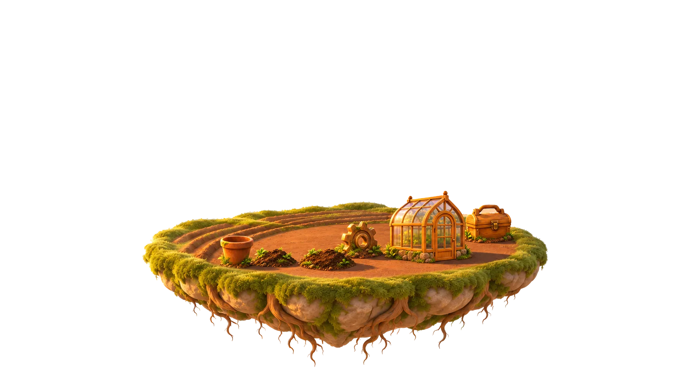
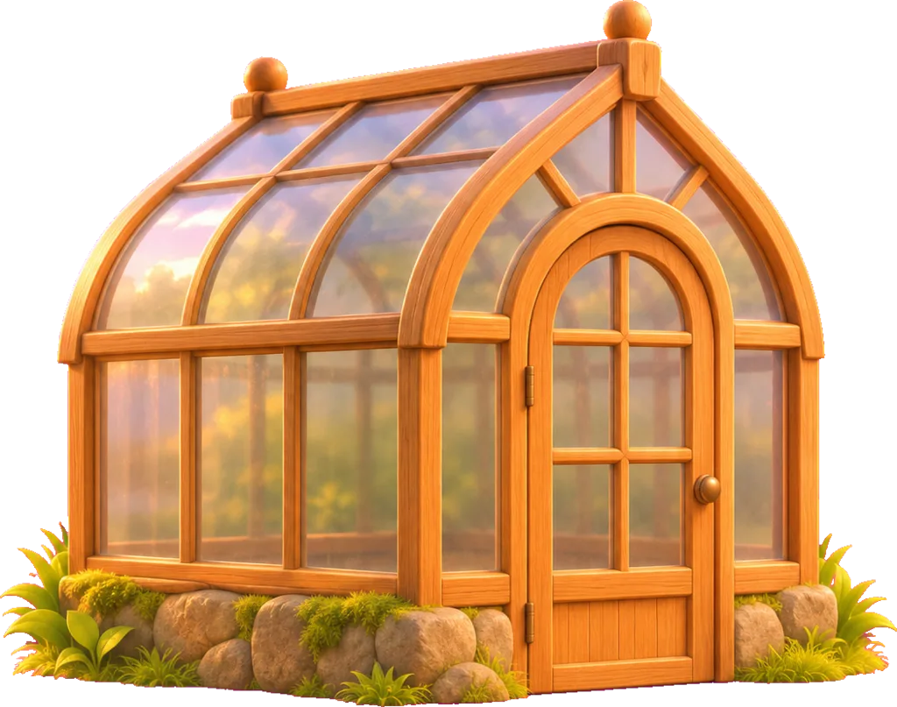

01 · El invernadero
Un sistema a medida
- Turnos y reservas
- Paneles de gestión
- Usuarios con roles y permisos
- Integraciones con lo que ya usás
Lo que tu operación necesita, sin convertir la tecnología en protagonista. Tocá cada parte del taller.

Bot de WhatsApp y Telegram desde USD 120: responde consultas frecuentes y te deriva cuando hace falta una persona.
Quiero que me avisenLo que tu operación necesita, sin convertir la tecnología en protagonista.
01 · El invernadero
02 · La maceta
03 · La caja de herramientas
04 · El engranaje
Las automatizaciones se cotizan según cada caso.
Consultar por una automatizaciónLo que tu operación necesita, sin convertir la tecnología en protagonista.
